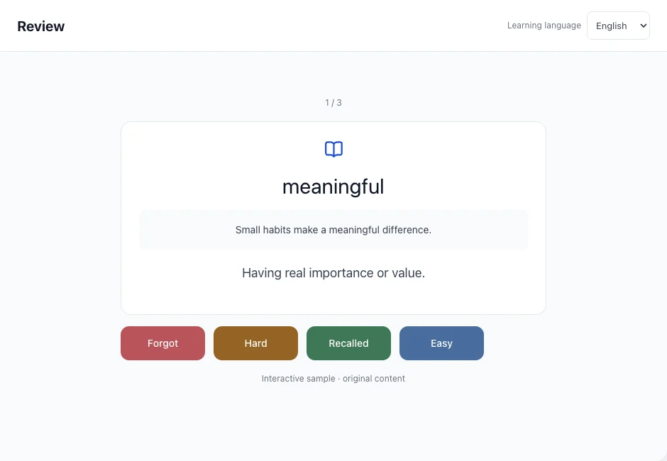
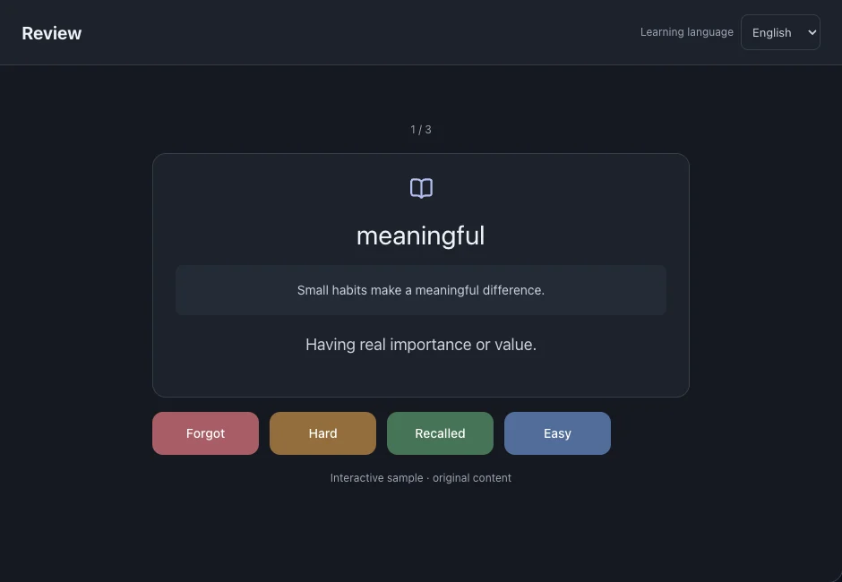

Review
Recall a word or phrase in its original sentence, then rate how well you remembered it. The app schedules the next review from your answer.
On this page
Complete a review
- Open Review and read the current card. Try to recall the meaning before revealing the answer.
- Reveal the answer and compare it with what you remembered.
- Choose a rating and move to the next card. The rating is saved in the review record.



Choose an honest rating
Forgot: you could not recall it. Hard: you recalled it with difficulty. Recalled: you recalled it correctly. Easy: you recalled it quickly and confidently.
The displayed next-review time depends on this card’s history and your rating. It is not a fixed interval or a push notification.
Check familiar frequency words
If you enabled a frequency baseline, reviews can include checks of those familiar words. The baseline currently supports English and Chinese.
See alsoFrequency baseline